Quinto dibujo
Presenta una gran inscripción blanca sobre fondo de color, sin sol ni arbusto. El dibujo de la iglesia de San Nicolás es mayor y el de los ornamentos del encuadre de la imagen es distinto. El dibujo del valor de 30h violeta coincide con el quinto, pero está ejecutado de manera más tosca. El quinto dibujo se empleó para los valores: 5h verde azulado, 10h verde, 15h, 20h carmín, 25h violeta, 30h violeta, 50h azul, 75h, 120h, 500h.
5h – verde azulado
| Color | POFIS | MERKUR | N.º de planchas |
|---|---|---|---|
| verde azulado | 4 | 4 | 4 (planchas 1–4) |
| verde azulado oscuro | 4a | 4a | 8 (planchas 1–8) |
| verde oscuro | 4b | 4b | 4 (planchas 5–8) |
Tirada: 118 764 900 (sin dentar 22 784 900, con dentado oficial 95 980 000) · Fecha de emisión: 1. 8. 1919 · Tipos del quinto dibujo
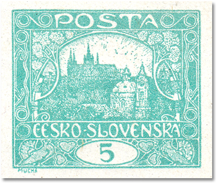
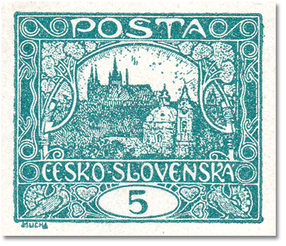
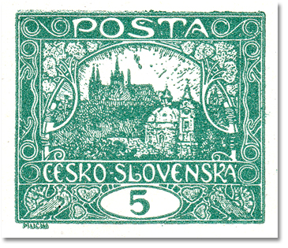
10h – verde
| Color | POFIS | MERKUR | N.º de planchas |
|---|---|---|---|
| verde / verde amarillento | 6 | 6 | 2 |
| verde oscuro | - | 6a | 2 |
Tirada: 60 719 500 (sin dentar 15 500, con dentado oficial 60 704 000) · Fecha de emisión: 3. 1. 1920 · Tipos del quinto dibujo
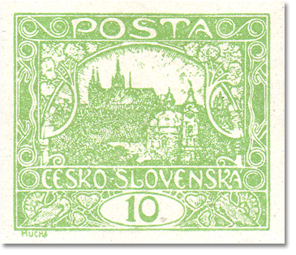
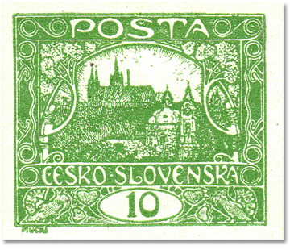
15h – rojo ladrillo
| Color | POFIS | MERKUR | N.º de planchas |
|---|---|---|---|
| rojo ladrillo | 7 | 7 | 3 (planchas 1,2,7) |
| rojo pardo | 7a | 7a | 3 (planchas 1,2,7) |
| rojo | 7b | 7b | 3 (planchas 1,2,7) |
| carmín / rojo carmín | 7c | 7c | 2 (planchas 5,6) |
| bermellón | 7d | - | 4 (planchas 3–6) |
Tirada: 112 504 400 (sin dentar 52 031 400, con dentado oficial 60 473 000) · Fecha de emisión: 7. 6. 1919 · Tipos del quinto dibujo · Plancha agrietada

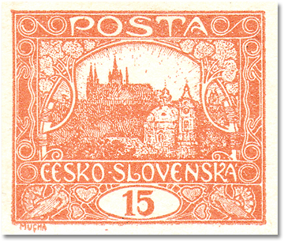


20h – carmín
| Color | POFIS | MERKUR | N.º de planchas |
|---|---|---|---|
| carmín | 9 | 9 | 2 |
| rosa | - | 9a | 2 |
Tirada: 44 917 000 (sin dentar 10 000, con dentado oficial 44 907 000) · Fecha de emisión: 3. 1. 1920 · Tipos del quinto dibujo
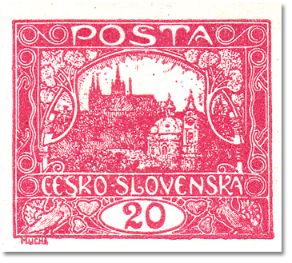
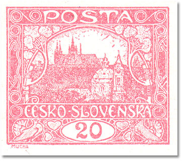
25h – violeta
| Color | POFIS | MERKUR | N.º de planchas |
|---|---|---|---|
| violeta | 11 | 11 | 4 (planchas 1–4) |
| violeta negruzco | 11a | 11a | 2 (planchas 1–2) |
| violeta parduzco | 11b | - | 2 (planchas 1–2) |
Tirada: 96 300 000 (sin dentar 47 800 000, con dentado oficial 48 500 000) · Fecha de emisión: 9. 7. 1919 · Tipos del quinto dibujo
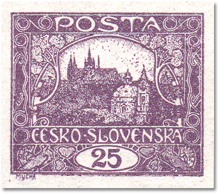
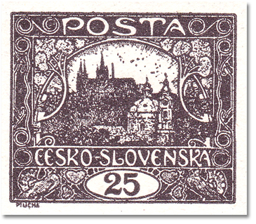
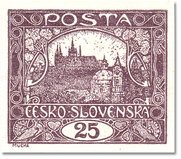
30h – violeta
| Color | POFIS | MERKUR | N.º de planchas |
|---|---|---|---|
| violeta claro | 13 | 13 | 2 |
| violeta oscuro | 13a | 13a | 2 |
Tirada: Con dentado oficial 36 000 000 · Fecha de emisión: 12. 4. 1920 · Tipos del quinto dibujo
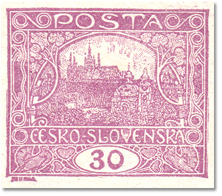
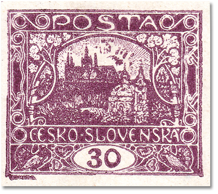
50h – azul
| Color | POFIS | MERKUR | N.º de planchas |
|---|---|---|---|
| azul | 16 | 16 | 2 |
| azul oscuro | - | 16a | 2 |
Tirada: Sin dentar 7 769 000 · Dentado: – · Fecha de emisión: 19. 8. 1919 · Tipos del quinto dibujo
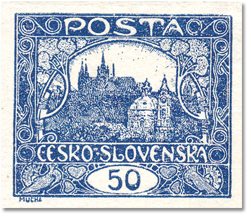
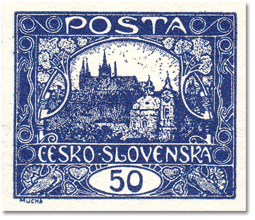
75h – gris verdoso
| Color | POFIS | MERKUR | N.º de planchas |
|---|---|---|---|
| gris verdoso | 18 | 18 | 2 |
Tirada: Sin dentar 9 096 000 · Dentado: – · Fecha de emisión: 3. 7. 1919 · Tipos del quinto dibujo
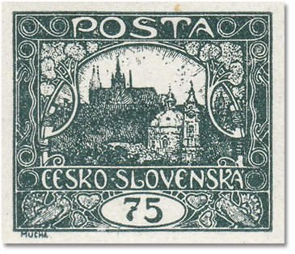
120h – gris
| Color | POFIS | MERKUR | N.º de planchas |
|---|---|---|---|
| gris | 21 | 21 | 2 |
| gris claro | 21a | 21a | 2 |
| gris plateado | 21b | 21b | 2 |
| gris negruzco | 21b | - | 2 |
Tirada: 5 640 000 (sin dentar 5 250 000, con dentado oficial 390 000) · Dentado: 11½ de línea · Fecha de emisión: 28. 7. 1919 · Tipos del quinto dibujo
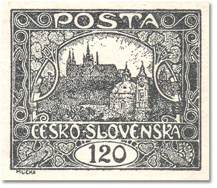
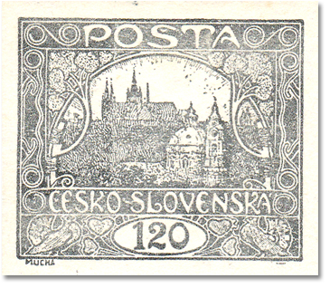
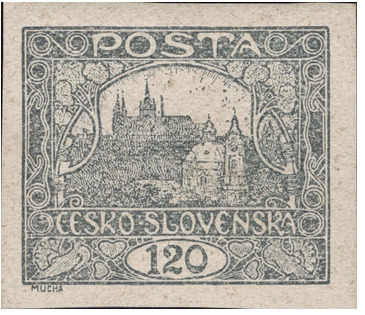
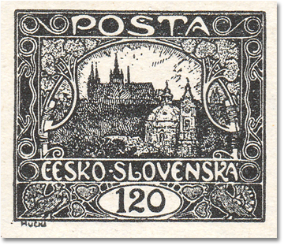
500h – marrón
| Color | POFIS | MERKUR | N.º de planchas |
|---|---|---|---|
| marrón | 25 | 25 | 2 |
Tirada: Sin dentar 1 240 000 · Dentado: – · Fecha de emisión: 9. 8. 1919 · Tipos del quinto dibujo · Tipo I de espiral de la plancha II
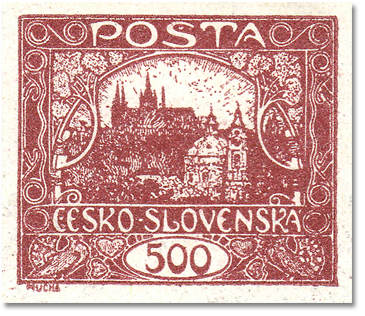